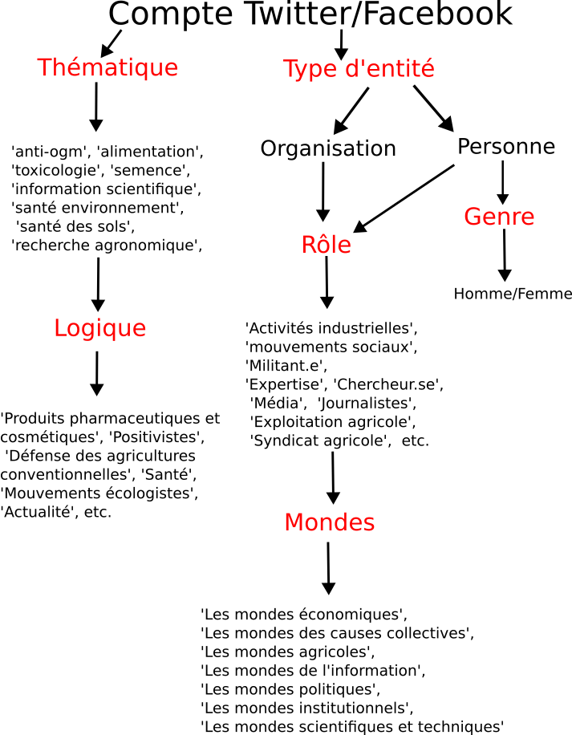

Les mondes sociaux de la controverse
Contents
%%html
<style>
.rendered_html p {font-size: 12pt;
line-height: 135%;
margin: 0;
text-align: justify;
}
</style>
Les mondes sociaux de la controverse#
Le corpus Twitter” est composé de 1351047 tweets publiés par 236670. Le “corpus Facebook” contient quant à lui publications produites par 51719 comptes, dont 30392 pages et 21327. Afin d’identifier les groupes engagés dans les débats autours des pesticides sur Twitter et Facebook, nous avons décris “manuellement” groupes et pages facebook ainsi que Twitter. Dans les paragraphes qui suivent, nous revenons tout d’abord sur la procédure mise en place pour sélectionner les comptes que nous avons annotés, puis nous présentons la méthode de classification des comptes. Nous terminons enfin par une courte analyse descriptive du codage réalisé.
La sélection des pages, groupes (Facebook) et comptes annotés (Twitter)#
Les analyses ci-après portent uniquement sur les groupes et pages facebook ainsi que les comptes twitter que nous avons “annoté” à la main. Les comptes ont été choisis de la façon suivante :
Pour chacun des corpus (twitter et facebook) de départ, nous avons conservé les comptes avec dix publications ou plus sur le sujet des pesticides. Cela représente un premier échantillon de 4139 pages et 2758 groupes Facebook, soit 6897 comptes. Cela représente 13.3 % du nombre total de comptes. Ils sont à l’origine de 34.4 % des posts du corpus. Concernant le corpus twitter, on a 20727 comptes ayant publié dix tweets ou plus, soit 8.8 % des comptes. Ces 20727 comptes ont publiés 27.5 % des tweets du corpus ( sur 1351047).
À partir de ce premier sous-ensemble, nous avons calculé un ratio donnant pour chaque compte la part des publications relatives aux pesticides (celles incluses dans le corpus) sur le total de ses publications. Ce faisant, on obtient dans le cas du corpus Facebook un second sous-ensemble composé de pages et 343 groupes, soit 2074 comptes. Cela représente 4.0 % des comptes, leurs contributions constituant 34.4 % du corpus Facebook. Dans le cas du corpus Twitter, les comptes qui ont 1% ou plus de leurs tweets sur les pesticides sont 371393, soit 4.0 %. Ils sont à l’origine de 27.5 % des tweets du corpus.
Enfin, après avoir triés les tableaux de données en fonction du ratio “publication sur les pesticides/total des publications” par ordre décroissant, nous avons annotés les premiers groupes et pages Facebook, et les premiers comptes Twitter. Illustrons cette dernière avec trois cas concrets (pris du corpus Facebook) :
Cas 1: La page Campagne Glyphosate 83 a publié 190 posts relatifs à la question des pesticides sur un total de 224. On a donc un ratio de 84.8 %. Il fait par ailleurs partie du 2e plus gros contributeur du corpus. Il sera donc annoté.
Cas 2 : La page Alternatiba Mulhouse a publié 16 posts relatifs à la question des pesticides sur un total de 1781.0. On a donc un ratio de 0.9 %. Le ratio est inférieur à 1 %, la page ne sera pas annotée.
Cas 3 : La page Extinction Rebellion Auderghem a publié 11 posts relatifs à la question des pesticides sur un total de 275. On a donc un ratio de 4.0 %. Bien que le ratio soit supérieur à 1 %, la page n’est que la cinq cent unième contributrice du corpus. Elle ne sera pas annotée.
Au final, Les comptes Facebook annotés représentent 0.4 % des comptes. Ils sont auteurs de 11.1 % des posts du corpus. Les comptes twitter annotés forment pour leur part 0.2 % des comptes et ont publié 10.0% des tweets du corpus. Ces différentes subdivisions sont illustrées par la figure ci-dessous.
<matplotlib.legend.Legend at 0x7f015c4b8a90>
<matplotlib.legend.Legend at 0x7f015abe39d0>
L’annotation des comptes#
L’annotation des comptes, c’est-à-dire leur description, s’est faite en renseignant une dizaine de variables. Certaines variables proviennent de catégories choisies par les propriétaires des comptes – on peut parler de catégories indigènes–, tandis que d’autres proviennent de nos propres catégorisations.
Par exemple, si on se rend dans la section “à propos” de la page facebook ”Campagne Glyphosate 83”, on peut lire dans la rubrique “général”, sous le nombre de personnes “aimant la page” et le nombre d’abonnés, qu’elle est définie comme une “cause”. Cette étiquette correspond à la “catégorie” que toute personne créant une page facebook doit obligatoirement renseignée. Une page peut appartenir au maximum à trois catégories (voir “créer une page facebook”). En revanche, ce champ n’existe pas pour les groupes. Il n’existe pas non plus sur Twitter d’équivalents exacts aux catégories proposées par Facebook. On utilisera à la place les hashtags utilisés par auteur.trices dans la description de leur compte.
De notre côté, nous avons qualifié la “Campagne Glyphosate 83” comme étant un mouvement social de lutte contre les pesticides et plus particluièrement le glyphosate. En tant que mouvement social, nous avons par ailleurs classé la “Campagne Glyphosate 83” parmi “Les mondes des causes collectices”. Nous avons utilisés le même jeu de variables et de modalités pour décrire les pages, les groupes et les comptes twitter. Cette qualification prend en compte quatre types d’attribut:
Le premier attribut dit si la page, le groupe1 ou le compte twitter représente une personne ou une organisation. Lorsque c’est une personne, nous précisons lorsque c’est possible, s’il s’agit d’un homme ou d’une femme.
Le second attribut vise à classer les comptes en fonction du “rôle” qu’ils endossent. Autrement dit, au nom de quoi ou de qui une page, un groupe ou un compte twitter s’expriment-ils ? Est-ce au nom d’un mouvement social ou d’une instituation, comme journaliste, en tant qu’agriculteur.trice ou personnalité politque ?
Le deuxième attribut est plus transparent (dans son intitulé). Il concerne la thématique des pages, groupes et comptes Twitter: dénoncent-ils l’utilisation des pesticides ? Défendent-ils au contraire l’agriculture conventionnelle ? S’agit-il d’un mouvement de reconnaissances de victimes ?
Enfin le quatrième attribut propose de qualifier les mondes auxquels les pages, groupes et comptes observés semblent appartenir. Cette qualification s’appuie sur la définition au préalable du rôle. Ainsi, nous avons considéré que toutes les pages qualifiées de “mouvement social” ou de “contre-mouvement social”2 appartenaient aux “mondes des causes collectives”. Une page, un groupe ou un compte peut appartenir au maximum à deux “mondes”. Une agricultrice qui manifeste une appartenance à un quelconque mouvement social sera classée à la fois dans “les mondes agricoles” et dans “les mondes des causes collectives”.
Le “rôle”, les “mondes” et la “thématique” ont permi de synthétiser un premier codage extensif. “Extensif” au sens où les catégories étaient créée au fur et à mesure de l’exploration des pages, des groupes et des comptes. Nous nous sommes par ailleurs appuyé uniquement sur les éléments de description3. Ces variables ne disent donc rien du contenu des publications.
1 Dans la suite du document, les termes de “page” et “groupe” font exclusivement référence aux “pages et groupes Facebook”
2 La catégorie de “contre-mouvement sociale”, appelée de cette façon en référence à Snow et Benford, sert à qualifier les pages, groupes ou comptes créés en réaction à des mouvements tels que “Générations fututres”, “Nous voulons des coquelicots” ou “Greenpeace”. Comme exemple de contre-mouvements sociaux, on peut citer “Écologie et rationalisme” ou “Notre futur dans les champs”.
3 Dans le cas de Twitter, les données collectées à l’aide de minet contiennent une colonne nommée “user_description” correspondant à la phrase de présentation qui est affichée, lorsqu’elle existe, sous l’avatar et le pseudonyme de l’utilisateur.trice. Dans le cas de Facebook, les éléments de descriptions ne font pas partie du corpus de données récupérées à partir de CrowTangle. Cela suppose donc de visiter manuellement chaque compte pour accéder à son “à propos” et ses éléments de description.
